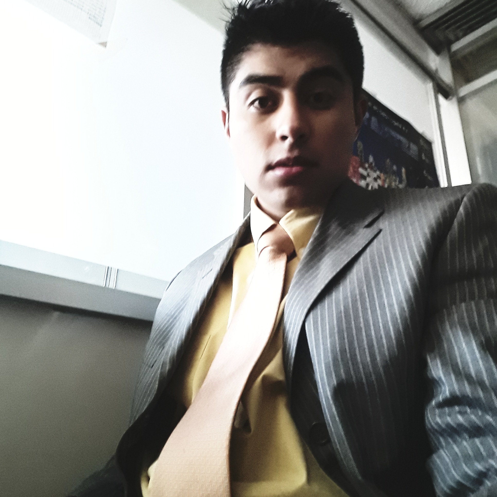
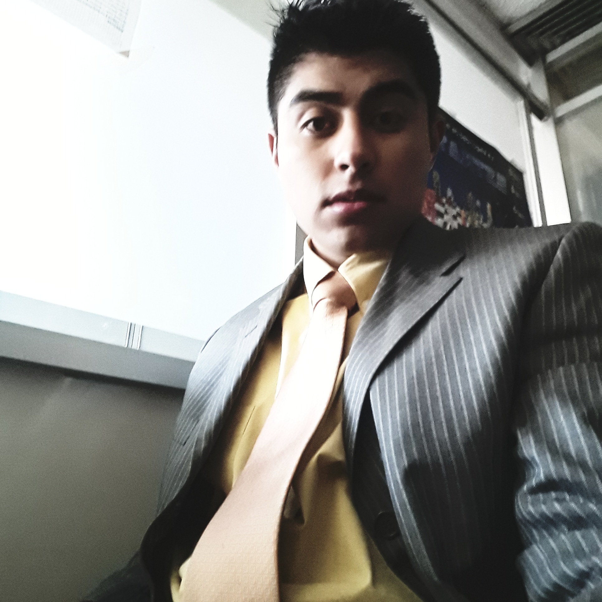

|  | Norman Brandon Saldaña HernadezEstudiante Ingenieria MecatrónicaTécnico en Sistemas Digitales |
|
|---|
|  | Norman Brandon Saldaña HernadezEstudiante Ingenieria MecatrónicaTécnico en Sistemas Digitales |
|
|---|
Competencias Profesionales |
Hobbies |
|---|
Experiencia laboral y logros |
Formacion Academica |
|---|
 5520129071
5520129071
 normanbrandons11@gmail.com
normanbrandons11@gmail.com